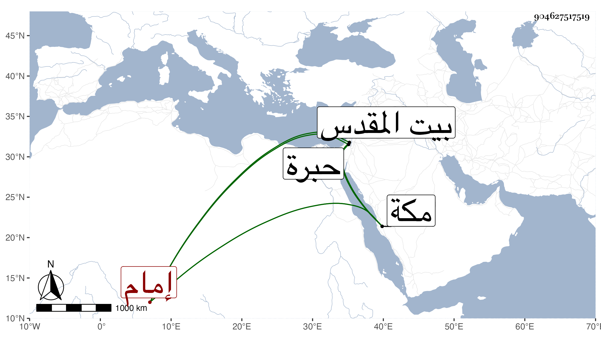

0902Sakhawi.DawLamic.ITO20230111-ara1.EIS1600.904627517519
Biography ID: 904627517519
381
عبد الرحمن بن محمد بن محمد بن عبد الرحمن بن علي الزين بن الكمال إمام الكاملية ، وحج مع أبيه وزار بيت المقدس والخليل وسمع هناك على التقي ابن فهد والتقي القلقشندي وتكرر حجه بعده ومجاورته سنين ، واشتغل عند الزين زكريا والمسيري ، وفهم بالنسبة لأخويه فهو أفهمهم ولما انتزع له جوهر المعيني مشيخة دار الحديث الكاملية من مستحقها شرعا رتب هذا في القاء صورة درس وحضر معه العبادي والبقاعي وغيرهما ثم صار يستنيب إلى أن أعرض عنها بدراهم لابن النقيب وقيل : ما سرت من حرم الا إلى حرم . وقد كثرت مجاوراته بمكة وتفاتن هو وأخوه أحمد وكان بمكة سنة ثمان وتسعين وكانت جل إقامته بها يمشي على عكاز أو نحوه لعارض اقتضاه ورجع مع الموسم وترك زوجته وابنه وأخوه ممن طلع مع الركب وتخلف سنة تسع وتسعين فلم يسأل عنهما ، وبالجملة فهو أحسن من ذاك بكثير .
